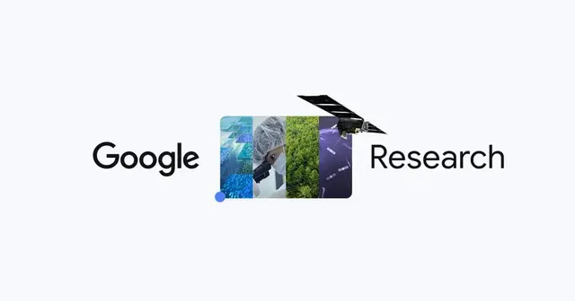

Google、10分級の長尺AI動画へ「一貫性」を保つマルチエージェント技術を公開

Google Researchは2026年9月24日、長尺AI動画で発生しやすいキャラクターや背景の変化、上流工程のミスが後工程へ連鎖する問題を抑える、統合型マルチエージェント研究を発表しました。単に高品質な短いクリップを生成するのではなく、物語全体を「世界状態を維持する最適化問題」として扱う点が特徴です。0
記事で取り上げている点
- GeminiとVeoを複数のAIエージェントが統括
- 長尺動画を支える3つの追加技術
- ベンチマークでも長期的一貫性を評価
- 今後の展望
一次情報（出典） research.google